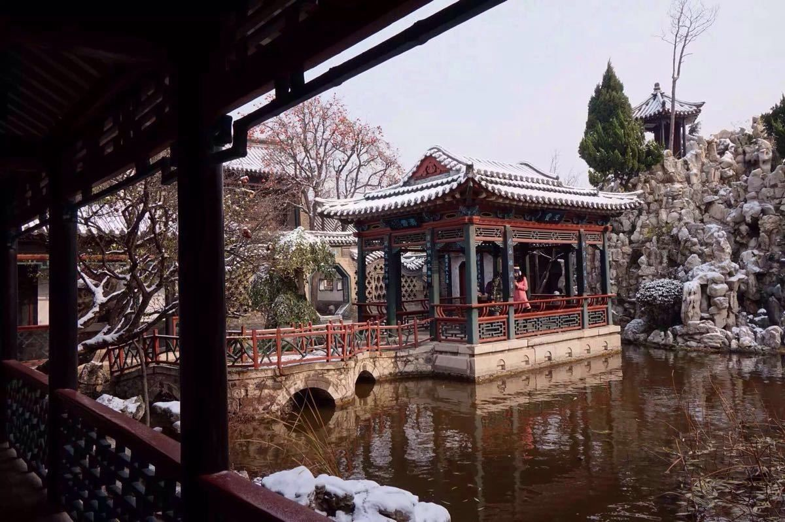
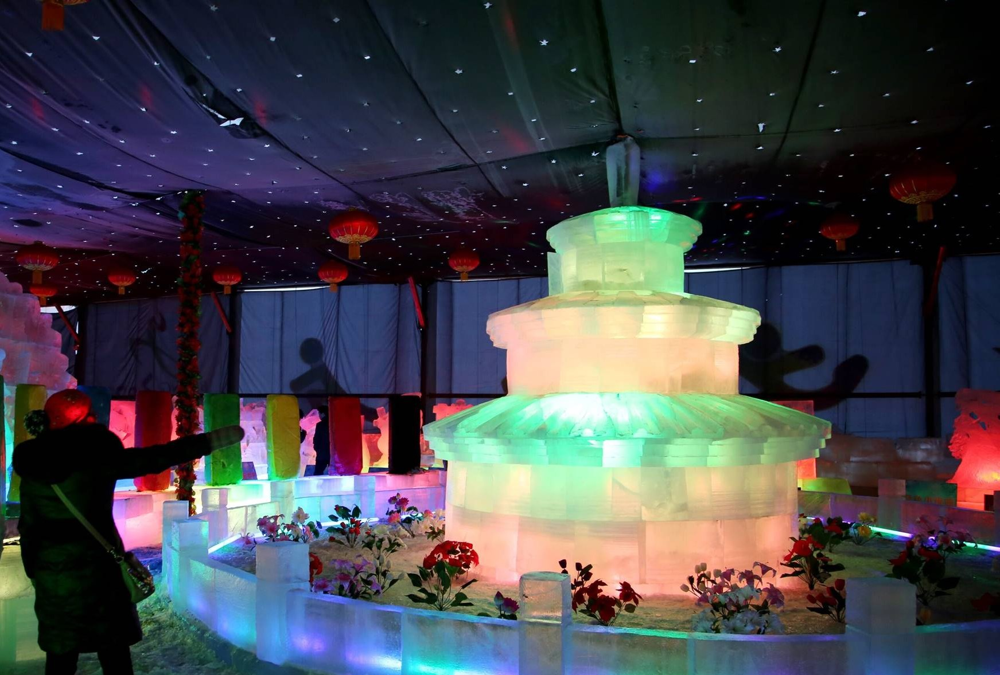
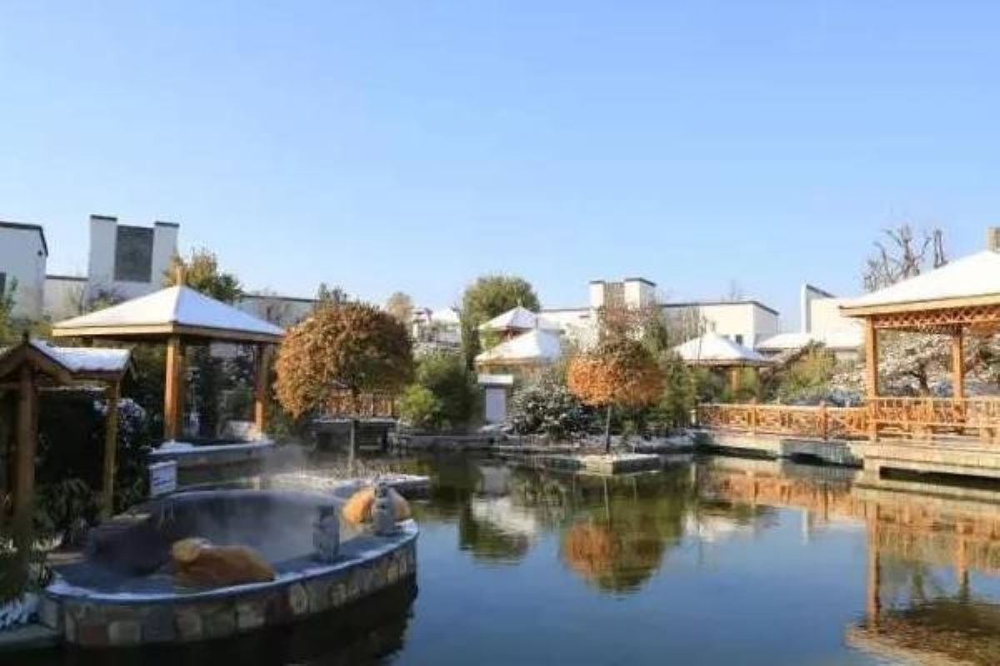

银装素裹的潍坊之冬
冬季的潍坊虽然寒冷，但别有一番韵味。雪后的城市银装素裹，各种冬季活动和节日庆典让寒冷的季节充满温暖。

雪中十笏园
古建筑与白雪相映成趣，仿佛穿越回古代。

富华冰雕展
每年冬季举办的冰雕艺术展，吸引众多游客。

温泉度假
冬季泡温泉是潍坊人最爱的休闲方式之一。

年货市场
春节前的年货市场热闹非凡，充满节日气氛。
冬季推荐活动
滑雪体验
推荐地点: 青州驼山滑雪场
开放时间: 12月-次年2月
温泉养生
推荐温泉: 临朐揽翠湖温泉
特色: 天然温泉，多种养生池
春节民俗
活动内容: 杨家埠年画制作、灯会
时间: 农历腊月至正月十五
冬季美食
推荐美食: 朝天锅、羊肉汤
特点: 暖身驱寒，滋补养生
冬季天气指南
十二月
平均温度: -3°C - 5°C
穿衣建议: 羽绒服+围巾手套
特点: 寒冷干燥，偶有降雪
一月
平均温度: -5°C - 3°C
穿衣建议: 厚羽绒服+保暖内衣
特点: 一年中最冷时段
二月
平均温度: -2°C - 7°C
穿衣建议: 羽绒服+毛衣
特点: 气温略有回升，仍寒冷